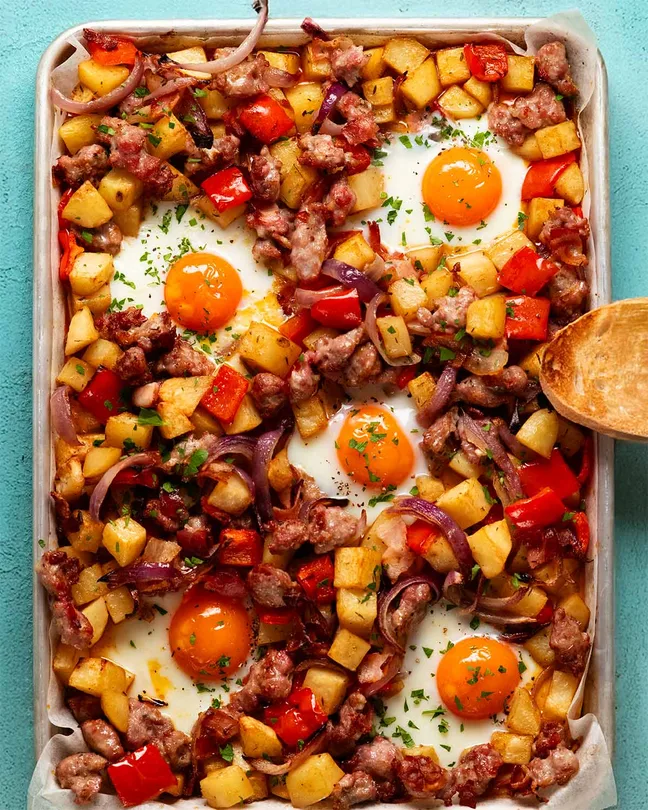

Baked sausage breakfast hash
Home

Description
A tasty one tray meal with your brekky favourites perfect for the weekend mornings! by Recipetin Eats
Prep time
15 min
Cook time
50 min
Serves
4-5
Ingredients
Seasoned potatoes
- 800g / 1.6lb potatoes , peeled, cut into 2cm / 0.8" cubes (Aus: Sebago (dirt brushed ones), US: russet, UK: Maris Piper), or other starchy or all-rounder potato (Note 1)
- 1 1/2 tbsp olive oil
- 1/2 tsp smoked paprika (sub regular)
- 1/2 tsp dried thyme (sub any dried herb)
- 1/4 tsp onion powder (sub more garlic powder)
- 1/4 tsp garlic powder (sub more onion)
- 1/2 tsp cooking salt / table salt
Everything else
- 1 red capsicum / bell pepper , cut into 2.5cm/1″ squares
- 1 red onion , cut into 1cm / 0.4″ wedges
- Pinch of salt and pepper
- 1 tbsp olive oil
- 100g / 4 oz streaky bacon , cut into 2.5cm/1" squares
- 500g/ 1 lb good pork sausages , or any sausage you want (Note 2)
- Eggs - as many as you want and can fit!
Method
- Preheat the oven to 200°C / 400°F (180°C fan-forced).
- Toss the potatoes with the oil and seasoning in a bowl. Spread on a lined tray, just big enough to hold everything in snugly rather than spread in a single layer (Note 3). Bake for 15 minutes.
- Capsicum and onion – Meanwhile, in the still-dirty potato bowl, toss the capsicum and onion with the oil, salt and pepper. Add to tray, then toss with the potatoes.
- Sausage & bacon – Squeeze dollops of the sausage meat out of the casings and dot them randomly on top (you could cut the sausages using a knife, but that just isn't as fun). Scatter with bacon.
- Bake 35 minutes – Bake 20 minutes. Toss, then bake for a further 15 minutes, or until potatoes are soft.
- Lower oven to 180°C/350°F (160°C fan).
- Eggs – Push the potato aside to make holes for the eggs. Crack eggs in. Return to oven for 7 minutes or until eggs are done to your liking.